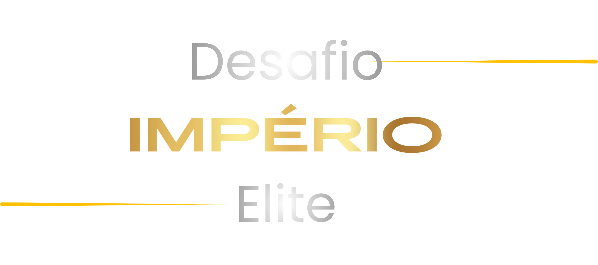

Sua Vez
Permita o acesso à câmera para usar o filtro Império Clinic com data e hora em tempo real.
Desenvolvido por Thulio Costa

Permita o acesso à câmera para usar o filtro Império Clinic com data e hora em tempo real.
Desenvolvido por Thulio Costa